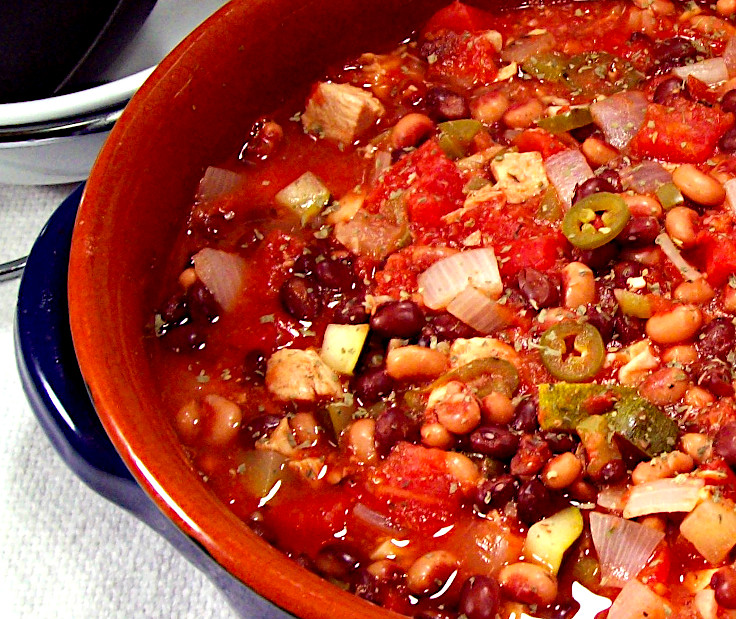

Black-Eyed Peas Black Beans and Chicken Stew

Colorful, spicy and aromatic this healthy meal will tantalize all your senses.
Ingredients
12 ounces cooked chicken
2 cups tomatoes canned diced no salt
2 ounces onion
2 ounces zucchini
2 ounces green bell pepper
4 cloves garlic
1 cup black beans canned less sodium
1 cup black eyed peas canned
1/4 cup sliced jalapenos canned
1 cup water
1/4 teaspoon dried cilantro
1/4 teaspoon pepper
1/4 teaspoon ground cumin
2 tablespoons & 2 teaspoons red wine vinegar
Steps
- Dice chicken and place in saucepan with undrained tomatoes.
- Dice onion, bell peppers, zucchini and garlic and add to saucepan.
- Drain and rinse black beans and black-eyed peans and add to stew along with jalapenos, and water. Sprinkle in cilantro, pepper, cumin seed and red wine vinegar. Stir to blend.
- Heat on medium high until bubbly, stirring often. Reduce heat to low and simmer for 15 to 20 minutes or until vegetables are tender.